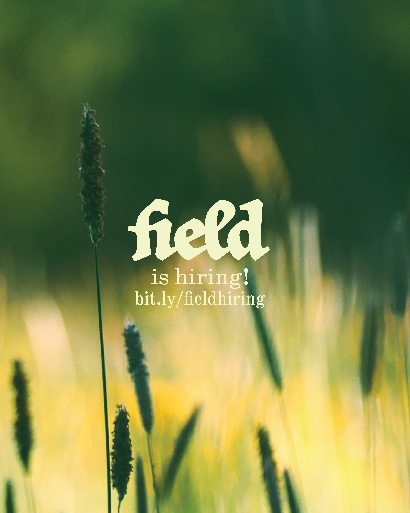

Set with JAF Herb, Schoolbook, and FieldFleurons (Custom Typeface).


A hypothetical media outlet for interviews, discussions, and music with a visual language rooted in storybooks and fairy tales. field is a way for people to connect and to be heard.
Set with JAF Herb, Schoolbook, and FieldFleurons (Custom Typeface).
